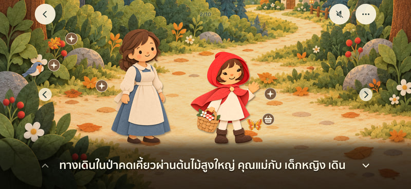

สองภาษา หนึ่งการผจญภัย
ฟังเสียงบรรยายภาษาไทยหรือภาษาอังกฤษที่บันทึกไว้ และอ่านตามข้อความในนิทาน
การผจญภัยเล็ก ๆ ที่ได้ใช้เวลาด้วยกัน
ดาวน์โหลดได้แล้วบน App Storeก้าวเข้าสู่โลกนิทานจากกระดาษซ้อนชั้น อ่านด้วยกัน ฟังเสียงบรรยายภาษาไทยหรือภาษาอังกฤษ แล้วค้นพบสิ่งเล็ก ๆ ระหว่างทาง



หนังสือนิทานสำหรับอ่าน ฟัง และสำรวจไปด้วยกัน
ฟังเสียงบรรยายภาษาไทยหรือภาษาอังกฤษที่บันทึกไว้ และอ่านตามข้อความในนิทาน
เลือกตัวละครและปรับรูปลักษณ์ในแบบของตัวเอง
แตะภาพในฉากเพื่อโต้ตอบกับตัวละครและสิ่งของ
ตั้งแต่ทางเดินคดเคี้ยวในป่าไปจนถึงแม่ไก่ผู้มุ่งมั่น เหล่าตัวละครที่คุ้นเคยรออยู่บนชั้นหนังสือ

Oonmoon 0.7.8 ปรับปรุงการแสดงผลตามขนาดหน้าต่าง ระยะขอบที่ไม่ถูกบัง และแนวแบ่งพื้นที่จอ โดยมีการตรวจสอบบางรายการบน Simulator แล้ว การเปลี่ยนหน้าจอขณะพับหรือกาง การใช้ Split View และการใช้งานบน iPhone Duo จริงยังไม่ได้รับการยืนยัน ฮาร์ดแวร์ยังไม่วางจำหน่าย ณ วันที่ตรวจสอบ 10 ตุลาคม 2026
แตะตัวผมหรือกด Enter เพื่อเปลี่ยนท่าเต้น
สร้างสรรค์ด้วยความอยากรู้
เกม เครื่องมือ และแอปเพื่อการเรียนรู้ สำรวจแอปทั้ง 21 แอปบน App Store
Practice blackjack card counting with short lessons, drills and Bandit the raccoon.
Use your iPhone’s motion sensors to see the direction and intensity of a putting slope.
Explore Buddhist teachings through short lessons, stories, reflection and journaling.
Type to fight back in a noir manuscript-horror game where the next word keeps you alive.
Add a smooth ball-flight tracer to golf swing videos and export a clip to share.
A sword-duel murder mystery told through moving ink, timed parries and conflicting accounts.
Pilot an interceptor through eight three-phase arcade boss battles with reactive fluid effects.
A portrait bullet-hell boss rush built around readable patterns, close calls and quick retries.
A political strategy game about winning city districts, outsmarting rivals and running for mayor.
Send Morse code with sound or light, learn with Flint and practice the rhythm of dots and dashes.
Read, listen and explore ten illustrated bedtime tales with Thai and English narration.
An AI-driven narrative RPG that builds a personal cosmic-horror story in the 1920s.
Guide Pip through compact puzzle towers, where every swipe changes the room.
Pixelate faces in live recordings or existing videos, with processing on your device.
Keep an 18-hole scorecard for your group and calculate settlements after the round.
Read the green, align your putt and make a touch stroke in a golfer’s-eye putting challenge.
Turn Thai payment slips into searchable records for personal use or a shop team.
Turn the sky into a sci-fi viewfinder with live, on-device camera effects and video recording.
Match blocks, chain combos and unleash character abilities in a one-on-one puzzle battle.
Stack falling slabs through eight atmospheric layers. Every misalignment stays with you.
Build a frontier AI lab, hire researchers and ship products in a satirical management game.
เลือกเว็บไซต์เพื่อดูรายละเอียด หรือเปิด App Store เพื่อดาวน์โหลด
ดาวน์โหลดได้แล้วบน App Store
App Store ↗